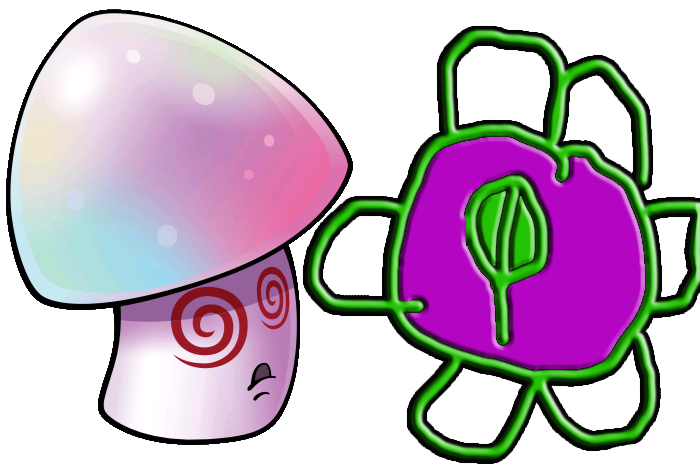
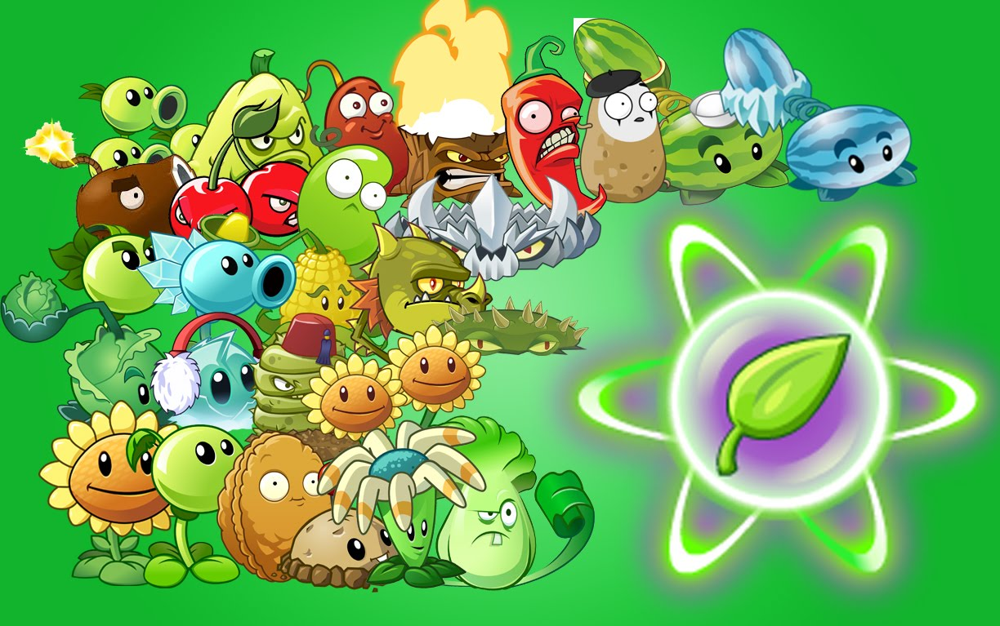
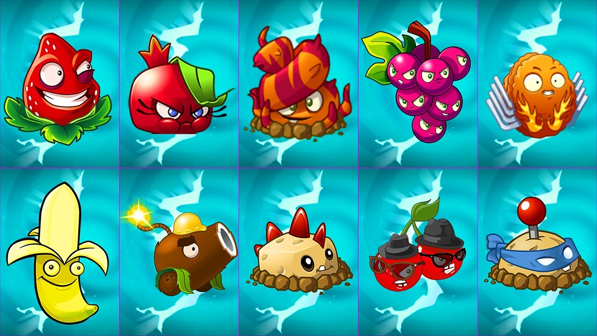
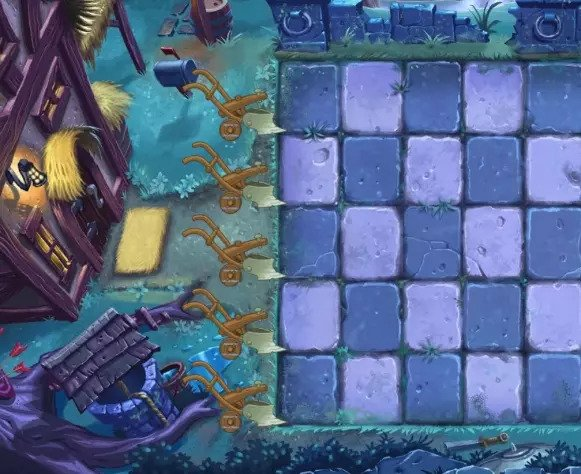
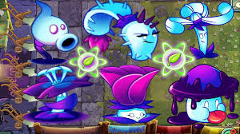
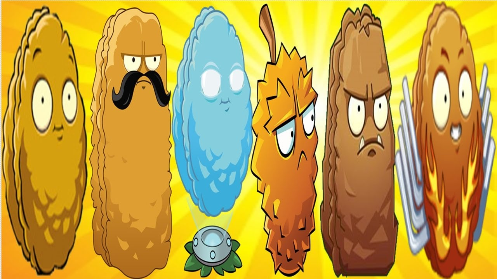
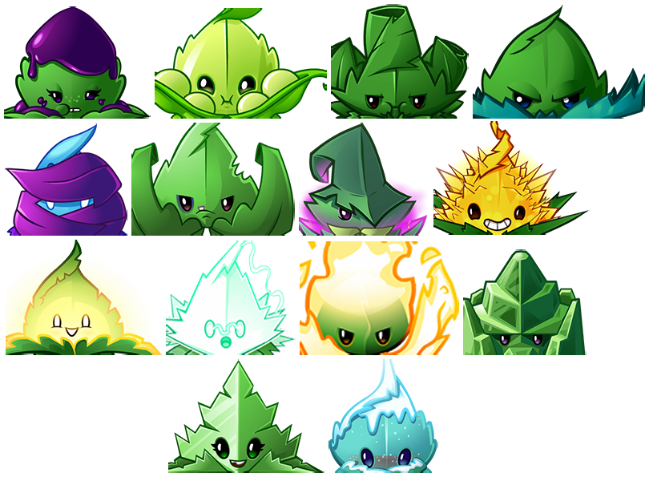
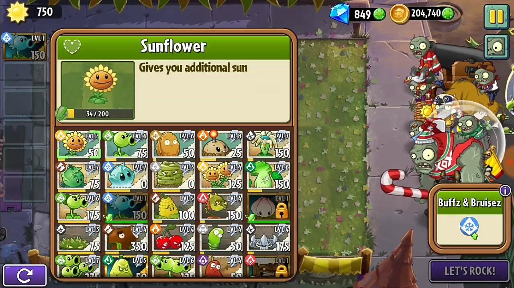
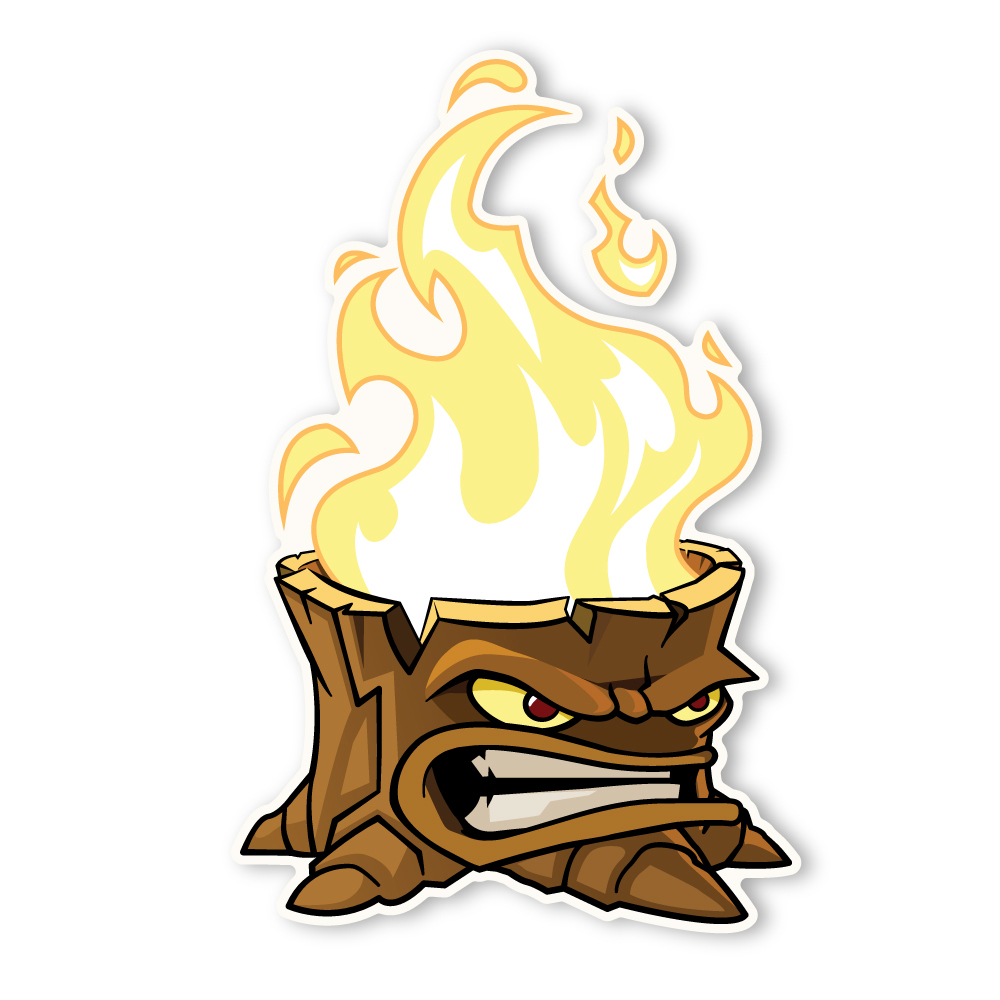
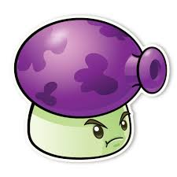

In battlez it's best if you give plant food to a hypno shoom because if a zombie eats it the zombie will turn into a hypno gargantuar. The hypno gargantuar will destroy every zombie in it's way.
In battlez you always need to use all of the plant food before the time runs out.
Always bring a exploding plant with you because it will kill any kind of Zombie except Gigantuar and Zomboss.
In battlez you have infinity lawn mowers (the high scoring zone) but don't waste the infinity lawn mowers otherwise your opponent will get more points and then you will loose.
You always use moon flower and don't forget to give them plant food, you might win the battlez.
If you put shadow plants next to moon flower moon flower can produce 2 suns at a time.
explode-o-doughnut is very powerful not only that it is blocking the zombies but when the zombies eat it finished it will explode killing all the zombies surrounding it but if you don't have explode-o-doughnut wall nut or tall nut is what you want to use. Tall nut cost more suns but it stops those flying zombies from getting to the high scoring zone.The wall nut cost less suns and let's the flying zombies fly over it.
If you have a mint bring it because the mints can destroy so many zombies in one time and it can heal up your plants so the plants can have so many damage.
In battlez you might see the little box with the powers if it has a shadow power with the up arrow that meens the game will heal the shadow plants but if there is cutting power with a up side down arrow that meens cutting plants are less powerful than usual.
If you put peashooter behind Torchwood the peashooter can shoot fire peas not normal peas.
Best defence against screen door zombies and can damage multiple zombies at the same time. Works well with gloom shrooms
